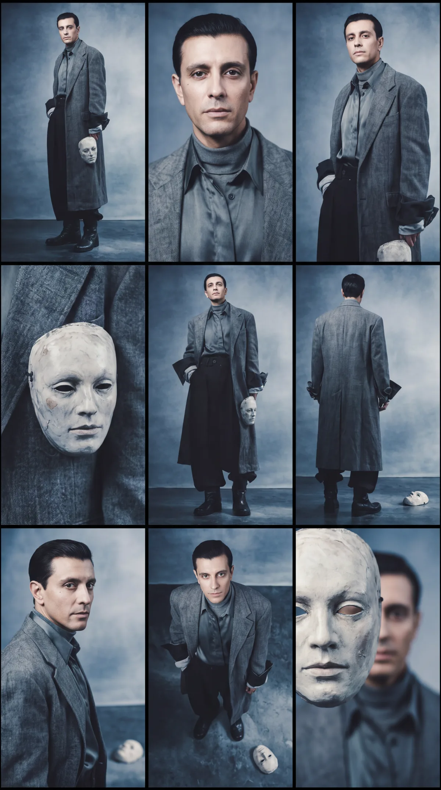
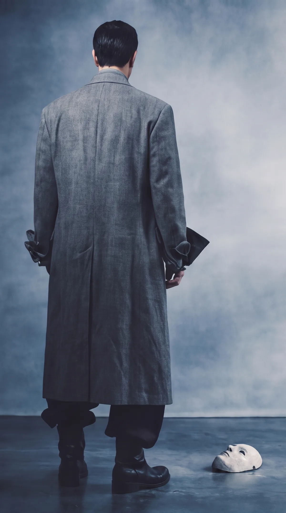
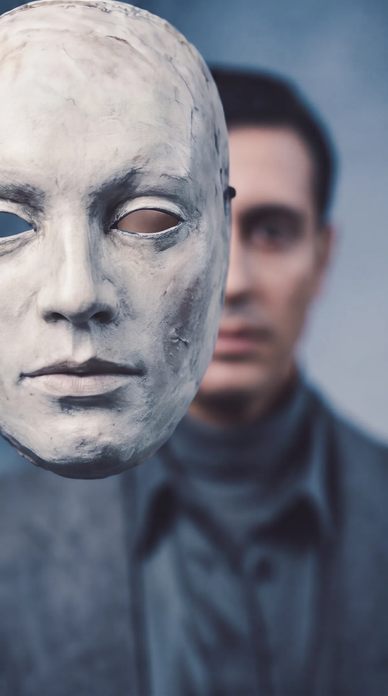
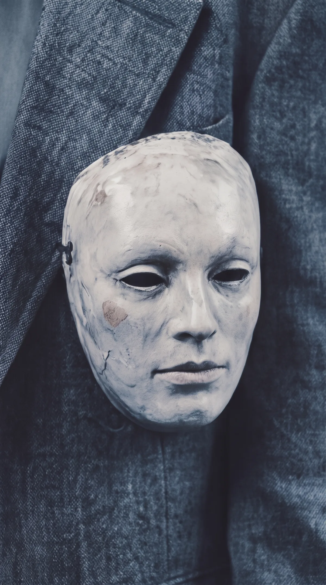
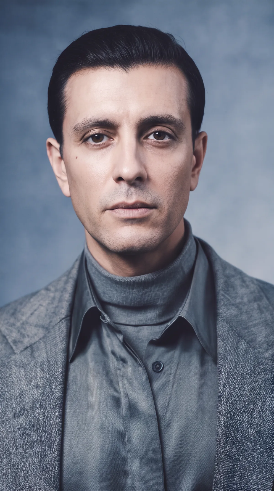

SETAEI / Music video / Suno + Higgsfield
CROWN OF
MY HEART
En låt ble til et visuelt univers. Musikk og lyd utviklet med Suno. Karakter, styling, kamera og musikkvideo bygget videre i Higgsfield.
01 — Fra lyd til bilde
Musikken kom først.
Crown of My Heart startet ikke med et bilde. Den startet med lyd — og spørsmålet om hvordan én AI-generert låt kunne få en tydelig visuell identitet.
Suno ble brukt til lydsporet. Deretter ble karakter, styling og scenestemning bygget som et separat visuelt system. Poenget var å unngå at videoen bare ble tilfeldige AI-shots: samme person, samme energi og samme romantiske univers skulle kunne gjenkjennes gjennom hele uttrykket.
02 — To verktøy, én produksjon
Suno lager stemmen i prosjektet. Higgsfield gir den et ansikt.
Låt og lydmateriale ble utviklet først og fungerte som tempo, stemning og retning for det visuelle arbeidet.
Karakterbilder, fashion-look, kamerafølelse og den ferdige 29-sekunders musikkvideoen ble produsert videre i Higgsfield.
03 — Se musikkvideoen
04 — Visual identity
Før motion:
finn karakteren.
De fem bildene du delte er ikke pynt rundt videoen. De er selve look-developmenten.
Vi jobbet gjennom forskjellige uttrykk før videoen fikk sitt endelige språk — portrett, styling, masken, lys og attitude.
Når karakteren først er definert, blir videoarbeidet enklere: kamera og bevegelse kan variere uten at prosjektet mister identiteten sin.





05 — Pipeline
Ikke «lag en AI-video». Bygg lyd → identitet → shots → motion.
Suno etablerer stemning og rytme.
Visuell identitet låses gjennom stillbilder.
Kamera, transitions og Gen Z-musikkvideo-estetikk bygges i Higgsfield.
Lyd og visuelt uttrykk samles til én kort musikkvideo.
06 — Hva prosjektet viser
AI som kreativ produksjonskjede.
Crown of My Heart er interessant fordi ingen enkeltmodell lager hele prosjektet.
Suno løser én del. Higgsfield løser en annen. Det kreative arbeidet ligger i å få verktøyene til å dele samme retning. For SETAEI er det nettopp dette som er poenget med AI-produksjon: ikke å vise én modell, men å orkestrere flere modeller til ett sammenhengende resultat.
SETAEI / Creative AI
Lyd, karakter og kamera i samme idé.
Crown of My Heart er en liten musikkvideo, men en komplett produksjon: fra lydgenerering til look-development og ferdig motion.